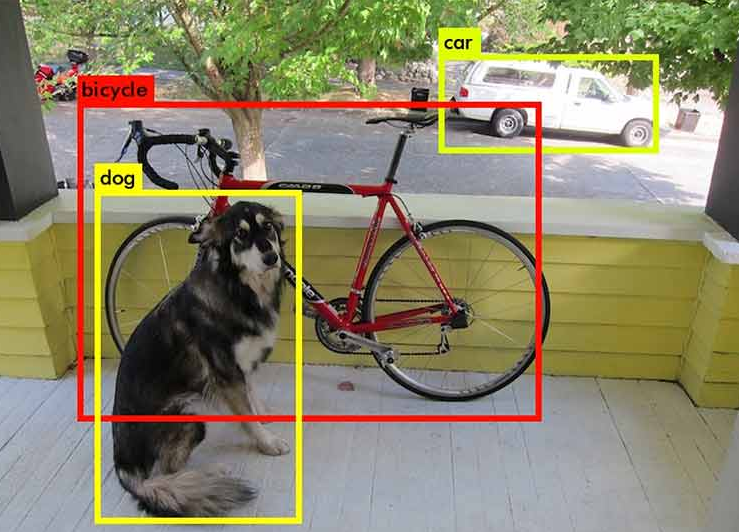

图像分割的应用#
什么是图像分割？#
在之前的笔记中，我们仅讨论了图像分类问题，即从一张图像中预测其所属类别（例如，“这是数字5的图像”或“这是猫的图像”）。 然而，图像分析还包括另外两大类任务：目标检测和图像分割。
图像中的目标检测#
图像中的目标检测是指在图像中定位并框选特定目标。例如，若目标是检测猫，而图像中同时包含一只狗和一只猫，则模型需学习在猫的周围绘制一个边界框（bounding box）。
下图展示了目标检测的直观示例：
 图片来源：Machinethink 博客
如您所见，目标检测在图像处理领域具有重要应用价值，但本笔记将不深入探讨该主题。
图像中的目标分割#
图像分割的目标是确定图像中每个像素所属的类别（例如，“位置为(120, 300)的像素属于狗”）。它旨在像素级别上精确提取图像内容信息。
下图展示了分割任务的典型输出：
 图片来源：Towards AI 博客
图片来源：Towards AI 博客
图像分割主要包括以下几种类型：
语义分割（Semantic Segmentation）： 对图像中每个像素进行类别标注，忽略实例区分（例如，所有汽车均标记为红色）。上图即为语义分割的示例。
实例分割（Instance Segmentation）： 对同一类别的不同实例分别标注（例如，第一辆车标红色，第二辆车标橙色）。
其他分割技术（如全景分割）可参考： 《计算机视觉中的图像分割技术》
本笔记将以语义分割为例进行实践。
使用的数据集#
本实验采用 Oxford-IIIT 宠物数据集，共包含 7349 张图像（4978 张狗图像 + 2371 张猫图像）。每张图像均提供：
分割标注（pixel-level）
宠物头部的边界框（bounding box）
数据集示例如下：

本实验仅使用宠物分割标注（忽略头部边界框信息）。
数据集获取说明：
需从官方网站下载完整数据集，因 torchvision 提供的版本不包含分割掩膜（segmentation masks）。
若目标数据集未收录在 torchvision 中，需自定义 Dataset 子类，以实现数据的加载与预处理逻辑。
# Import nécessaire pour le projet
from PIL import Image
import os
import matplotlib.pyplot as plt
from torch.utils.data import Dataset
import torchvision.transforms as T
import torch.nn as nn
from torch.utils.data import DataLoader
import torch
import numpy as np
class datasetSeg(Dataset):
def __init__(self, path):
self.path = path
self.imagesPath,self.masksPath=self.loadDataset()
self.resize=T.Resize((100, 100)) # Valeur de resize pour les images
self.toTensor=T.ToTensor()
def __len__(self):
return len(self.imagesPath)
def loadDataset(self): # Récuperation des liens vers les images et les annotations
images=os.listdir(self.path+"images/")
images=sorted(images)
masks=os.listdir(self.path+"annotations/trimaps/")
masks=sorted(masks)
masks=[ mask for mask in masks if "._" not in mask ]
images=[image for image in images if ".mat" not in image]
return images, masks
def __getitem__(self, index):
image=Image.open(self.path+"images/"+self.imagesPath[index]).convert('RGB')
# Resize des images et récuperation du masque de segmentation
trimap=self.resize(Image.open(self.path+"annotations/trimaps/"+self.masksPath[index]).convert('L'))
trimap=np.array(trimap)
# Création des masques pour les classes
class1 = (trimap == 1).astype(np.uint8)
class2 = (trimap == 2).astype(np.uint8)
class3 = (trimap == 3).astype(np.uint8)
mask = np.stack([class1, class2, class3], axis=0)
return self.toTensor(self.resize(image)), torch.tensor(mask)
数据集准备完成。接下来，我们将加载数据集并探索其内容。
dataset=datasetSeg(path="./../data/OxfordPets/")
img=dataset[0][0].permute(1,2,0).numpy()
msk = dataset[0][1].permute(1, 2, 0).numpy() * 1.0
fig, axs = plt.subplots(1, 2, figsize=(10, 5))
axs[0].imshow(img)
axs[0].set_title('Image')
axs[1].imshow(msk)
axs[1].set_title('Masque')
plt.show()
我们已成功加载图像及其对应的分割掩膜。接下来，我们将：
划分训练/测试集
定义
DataLoader
train_set, val_set, test_set = torch.utils.data.random_split(dataset,[0.7, 0.2, 0.1])
train_dataloader = DataLoader(train_set, batch_size=32, shuffle=True)
val_dataloader = DataLoader(val_set, batch_size=32, shuffle=True)
test_dataloader = DataLoader(test_set, batch_size=1, shuffle=True)
模型架构：U-Net#
与图像分类不同，分割任务的输出必须满足：
空间分辨率与输入一致（例如，输入为 \(224 \times 224 \times 3\)，输出为 \(224 \times 224 \times \text{类别数}\)）。
每个通道对应一个待分割类别（例如 10 类分割任务输出 10 通道）。
传统 CNN（如逐步降采样至全连接层的分类网络）无法直接适用，因其破坏了空间结构。为此，我们采用 U-Net 架构。
U-Net 的架构示意如下：
 图片来源：
图片来源：U-Net 的设计独特，由两部分组成：
收缩路径（Encoder）： 类似传统 CNN，通过下采样逐步缩小特征图尺寸，提取高层语义信息。
扩展路径（Decoder）： 通过上采样恢复特征图尺寸，最终输出与输入分辨率一致的分割结果。
关键设计：
跳跃连接（Skip Connections）： 将 encoder 各层的特征图直接传递给 decoder 对应层，保留局部细节信息。
encoder/decoder 结合： 同时捕获高层语义与低层纹理特征。
U-Net 最早应用于医学图像分割（Ronneberger et al., 2015），现已广泛用于分割、去噪、扩散模型等领域。
转置卷积（Transposed Convolution）简介#
我们已学习了标准卷积层，其通过可学习参数对图像进行操作，并可通过 stride 参数保持或降低分辨率。
然而，在某些场景（如 U-Net 的 decoder）中，我们需要提升特征图分辨率。此时，标准卷积无法满足需求。
常见的上采样方法包括：
插值 + 卷积： 先使用非可训练插值（如双线性插值）放大图像，再应用标准卷积。类似于 pooling 的逆操作。
转置卷积（Transposed Convolution）： 作为卷积的“逆操作”，可通过可学习参数直接扩大特征图尺寸。下图展示了 \(2 \times 2\) 核的转置卷积示例：
 图片来源：D2L 计算机视觉教程
图片来源：D2L 计算机视觉教程
对两种方法的技术细节及优劣对比感兴趣的读者，可参阅： 《转置卷积与棋盘伪影》
本实验将采用转置卷积实现上采样。
PyTorch 实现#
接下来，我们将基于 PyTorch 实现 U-Net 架构。
# Fonction pour combiner couche de convolution, activation ReLU et BatchNorm pour éviter les copier coller
def conv_relu_bn(input_channels, output_channels, kernel_size, stride, padding):
return nn.Sequential(
nn.Conv2d(input_channels, output_channels, kernel_size, stride, padding),
nn.ReLU(),
nn.BatchNorm2d(output_channels,momentum=0.01)
)
# Idem mais avec la convolution transposée
def convT_relu_bn(input_channels, output_channels, kernel_size, stride, padding):
return nn.Sequential(
nn.ConvTranspose2d(input_channels, output_channels, kernel_size, stride, padding),
nn.ReLU(),
nn.BatchNorm2d(output_channels,momentum=0.01)
)
class UNet(nn.Module):
def __init__(self, num_classes=3):
super().__init__()
# encoder
self.conv1=conv_relu_bn(3, 64, 3, 1, 1)
self.conv2=conv_relu_bn(64, 64, 3, 1, 1)
self.maxPool1=nn.MaxPool2d(2, 2)
self.conv3=conv_relu_bn(64, 128, 3, 1, 1)
self.conv4=conv_relu_bn(128, 128, 3, 1, 1)
self.maxPool2=nn.MaxPool2d(2, 2)
#Module central
self.conv5=conv_relu_bn(128, 256, 3, 1, 1)
self.conv6=conv_relu_bn(256, 256, 3, 1, 1)
# Décodeur
self.convT1=convT_relu_bn(256, 128, 4, 2, 1)
self.conv7=conv_relu_bn(256, 128, 3, 1, 1)
self.convT2=convT_relu_bn(128, 64, 4, 2, 1)
self.conv8=conv_relu_bn(128, 64, 3, 1, 1)
# On va prédire un channel par classe
self.conv9=conv_relu_bn(64, num_classes, 3, 1, 1)
self.sigmoid=nn.Sigmoid()
def forward(self,x):
# Encodeur
x=self.conv1(x)
x1=self.conv2(x)
x=self.maxPool1(x1)
x=self.conv3(x)
x2=self.conv4(x)
x=self.maxPool2(x2)
# Module central
x=self.conv5(x)
x=self.conv6(x)
#Décodeur
x=self.convT1(x)
x=torch.cat((x,x2),dim=1)
x=self.conv7(x)
x=self.convT2(x)
x=torch.cat((x,x1),dim=1)
x=self.conv8(x)
x=self.conv9(x)
x=self.sigmoid(x)
return x
模型训练#
训练目标： 本实验不区分猫狗类别，仅将像素划分为 3 类：
宠物主体像素
边界像素
背景像素
# Nous défissons
model=UNet(num_classes=3).to('cuda')
criterion=nn.CrossEntropyLoss()
lr=0.001
optimizer=torch.optim.Adam(model.parameters(), lr=lr)
epochs=5
训练注意事项：
数据集规模较大，模型较深，若 GPU 性能有限，训练可能需数十分钟。
不建议在无 GPU 环境下尝试训练。
for epoch in range(epochs):
train_loss=0
for images,masks in train_dataloader:
images=images.to('cuda')
masks=masks.to('cuda').float()
optimizer.zero_grad()
seg=model(images)
loss=criterion(seg,masks)
loss.backward()
optimizer.step()
train_loss += loss.item()
print(f"step {epoch} train loss {train_loss/len(train_dataloader)}")
val_loss=0
for images,masks in val_dataloader:
images=images.to('cuda')
masks=masks.to('cuda').float()
with torch.no_grad():
seg=model(images)
loss=criterion(seg,masks)
val_loss += loss.item()
print(f"step {epoch} train loss {val_loss/len(val_dataloader)}")
/home/aquilae/anaconda3/envs/dev/lib/python3.11/site-packages/torch/nn/modules/conv.py:456: UserWarning: Plan failed with a cudnnException: CUDNN_BACKEND_EXECUTION_PLAN_DESCRIPTOR: cudnnFinalize Descriptor Failed cudnn_status: CUDNN_STATUS_NOT_SUPPORTED (Triggered internally at ../aten/src/ATen/native/cudnn/Conv_v8.cpp:919.)
return F.conv2d(input, weight, bias, self.stride,
step 0 train loss 0.9442852522120063
step 0 train loss 0.9016501573806114
step 1 train loss 0.8738441905121744
step 1 train loss 0.8578698165873264
step 2 train loss 0.8354099944785789
step 2 train loss 0.8258832287281117
step 3 train loss 0.8052123431806211
step 3 train loss 0.7977393028583932
step 4 train loss 0.7819347337440208
step 4 train loss 0.7781971261856404
训练完成后，我们将在测试集上计算模型精度。
def calculate_class_accuracy(preds, masks, class_idx):
#On convertit les prédictions en valeur entre 0 et 1 pour chaque classe
preds = torch.argmax(preds, dim=1)
# On ne récupère que les pixels de la classe d'intêret
preds_class = (preds == class_idx).float()
masks_class = (masks == class_idx).float()
# Calculer la précision pour la classe choisie
correct = (preds_class == masks_class).float()
accuracy = correct.sum() / correct.numel()
return accuracy
model.eval()
test_accuracy = 0.0
num_batches = 0
with torch.no_grad(): # Désactivation du calcul du gradient
for images, masks in test_dataloader:
images = images.to('cuda')
masks = masks.to('cuda').long()
seg = model(images)
# On calcule la précision pour la classe d'intêret (0 correspond à la segmentation de l'animal)
class_idx = 0
batch_accuracy = calculate_class_accuracy(seg, masks, class_idx)
test_accuracy += batch_accuracy.item()
num_batches += 1
# On calcule la précision moyenne sur l'ensemble du dataset de test
test_accuracy /= num_batches
print(f'Précision pour la segmentation de l animal : {test_accuracy*100:.1f}%')
Précision pour la segmentation de l animal : 43.4%
结果可视化#
我们将从测试集中随机选取图像，可视化模型的分割结果。对于分割任务，直观检查个别样本的输出尤为重要。 运行多次下方代码块，可查看不同图像的分割效果。
images,labels=next(iter(test_dataloader))
#Isolons un élément
image=images[0].unsqueeze(0).to('cuda') # Le unsqueeze permet de garder la dimension batch
with torch.no_grad():
seg=model(image)
# Affichons la segmentation prédite par le modèle pour cet élément
fig, axs = plt.subplots(1, 4, figsize=(20, 5))
axs[0].imshow(images[0].permute(1, 2, 0).cpu().numpy())
axs[0].set_title('Image de base')
axs[0].axis('off')
axs[1].imshow(seg[0][0].cpu().numpy(), cmap='gray')
axs[1].set_title('Animal')
axs[1].axis('off')
axs[2].imshow(seg[0][1].cpu().numpy(), cmap='gray')
axs[2].set_title('Fond')
axs[2].axis('off')
axs[3].imshow(seg[0][2].cpu().numpy(), cmap='gray')
axs[3].set_title('Contours')
axs[3].axis('off')
plt.tight_layout()
plt.show()

虽然整体精度仅为 43%，但大多数图像的分割结果仍较为准确。
实践练习#
为提升模型性能，您可以尝试以下优化策略：
调整网络结构： 增加/减少层数、修改各层通道数
添加正则化：
Dropout、BatchNorm调整训练超参数： 增加
epochs、调整学习率 (learning rate)
目标：最大化分割模型的性能指标！**